The masters · Kala Bhavana, Santiniketan
Nandalal Bose
1882–1966
Abanindranath's student, Kala Bhavana's teacher for thirty years, and the painter who taught Santiniketan to put art on its walls, its festivals and its floors.
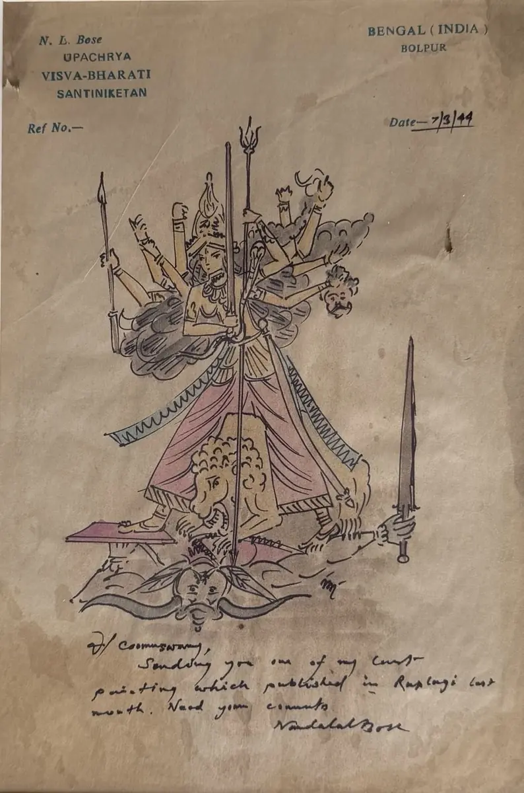
His life
- 1882Born in Kharagpur, Bihar
- 1905Becomes Abanindranath's student in Calcutta
- 1909Copies the murals of Ajanta
- 1922Takes charge of Kala Bhavana
- 1924Travels with Rabindranath to China and Japan
- 1930Linocut of Gandhi on the march to Dandi
- 1938The Haripura panels
- 1949Illuminates the Constitution of India
- 1954Awarded the Padma Vibhushan
- 1966Dies at Santiniketan
Swipe along the thread
His story
The painter who stayed to teach
মাস্টারমশাইMastermoshai: what Santiniketan called its teacher, and still does
Nandalal walked into Abanindranath Tagore's class in Calcutta in 1905 with a folder of his drawings, and Abanindranath took him on.
Two years later his painting Sati won a prize from the Indian Society of Oriental Art. Then came Ajanta, where he spent months copying the ancient murals, and learned how a painting could live on a wall and belong to everyone who passed it.
When Rabindranath asked him to lead Kala Bhavana, he brought that lesson to Santiniketan. He took students out to draw the trees, the animals and the Santhal villages. He brought in craftsmen to teach weaving, leatherwork and alpana. He painted the campus walls with his students, and made the festivals themselves into works of art.
He could have had a famous career in Calcutta. He chose to stay at Santiniketan, and it is through his students that his way of seeing still travels.
Works to know
Three works, three Nandalals
The wash painter of the Bengal School, the draughtsman who worked everything out in pencil first, and the eye that never tired of village life. All three are in the house.
Shiva
Wash painting · In the house
Krishna and Arjuna, First Study
Pencil on paper · In the house
Cowherd
Painted postcard · In the house
In 1976 the Government of India declared Nandalal's work a national art treasure. It is protected by law and cannot leave India.
In the house
Nandalal at House of Legends
Sixteen works and fourteen painted postcards in our care, from finished paintings to the studies behind them. All of them are here; come and see them, or ask us about one.
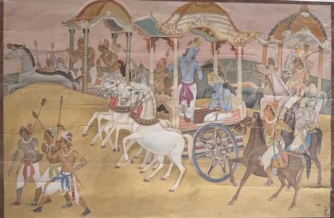
Krishna and Arjuna
Watercolour on paper
Krishna and Arjuna, First Study
Pencil on paper
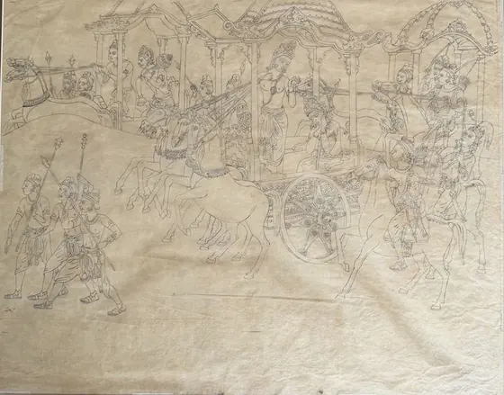
Krishna and Arjuna, Second Study
Pencil on paper
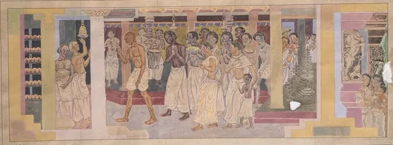
Procession to the Shrine
Watercolour on paper
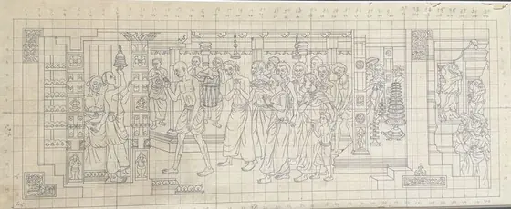
Procession, Squared Study
Pencil on paper
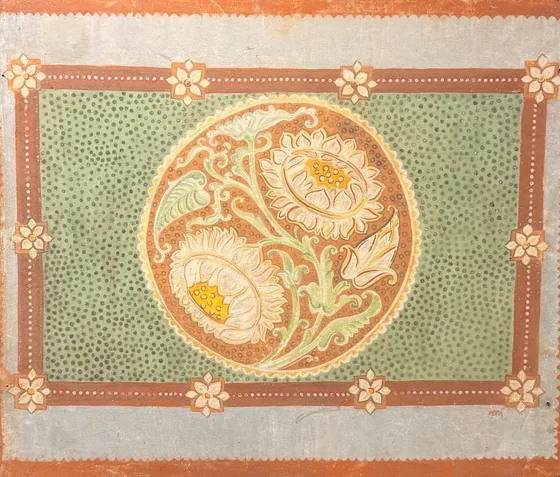
Floral Medallion
Tempera on board
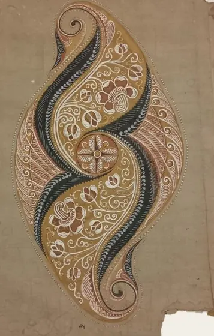
Paisley Study
Tempera on silk, laid on paper
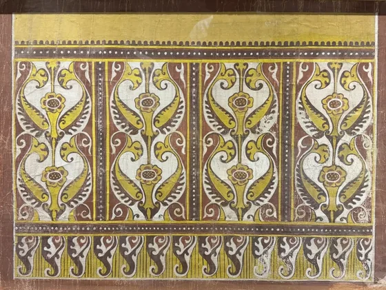
Ornamental Panel
Tempera on silk
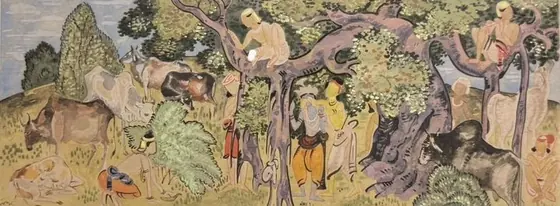
Krishna with the Herd
Watercolour
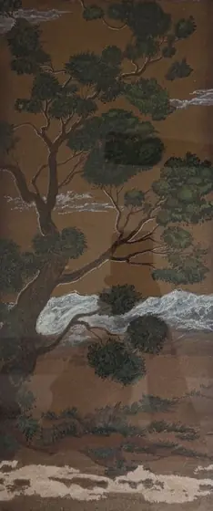
Tree and Clouds
Mixed media on paper
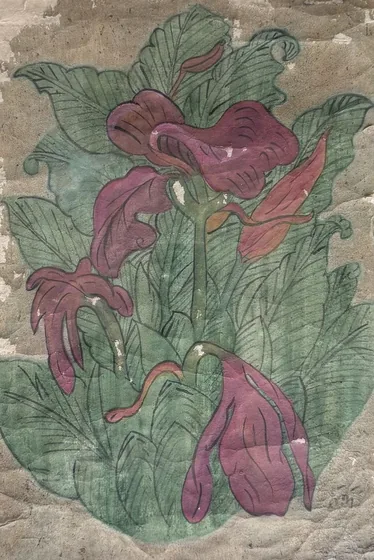
Lilies
Watercolour on paper
Shiva
Wash painting
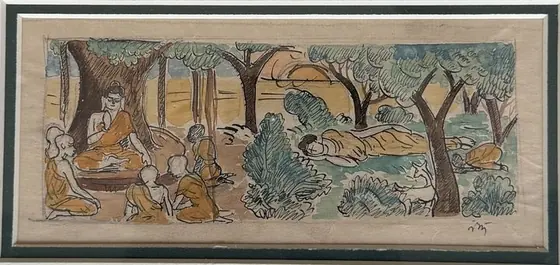
The Buddha in the Grove
Ink and watercolour
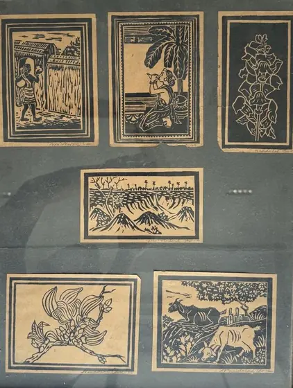
Six Vignettes, 1938
Ink on paper (set of six)
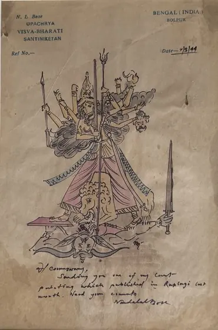
Durga, 1949
Ink and watercolour on paper
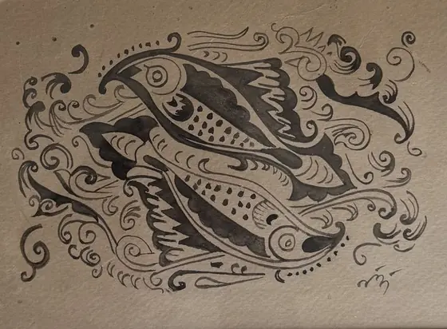
Fish
Ink on paper
The postcards
Fourteen cards he painted and drew, often while travelling, for friends and fellow artists.
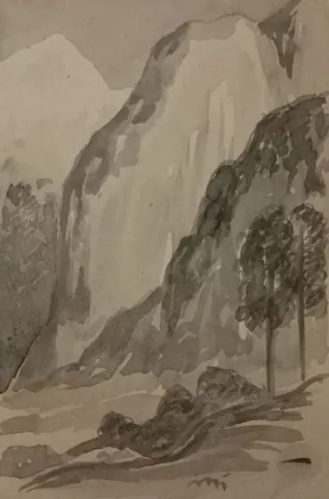
Cliff and Pines
Postcard 01
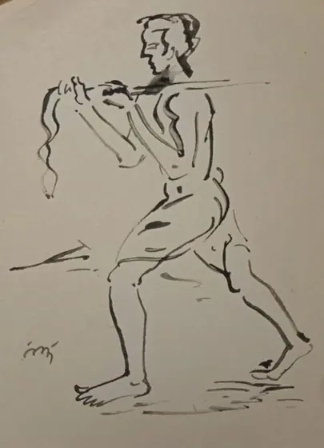
Man with a Pole
Postcard 02
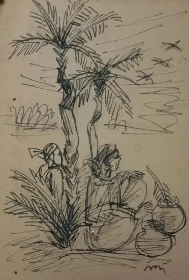
Under the Palms
Postcard 03
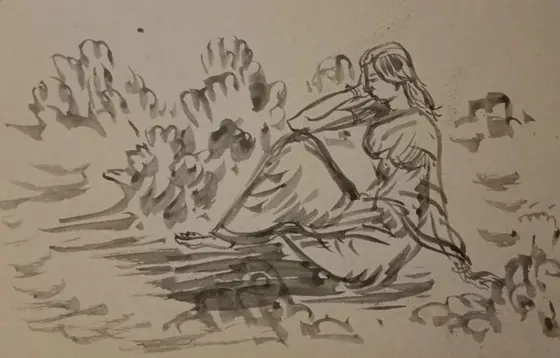
Seated Woman
Postcard 04
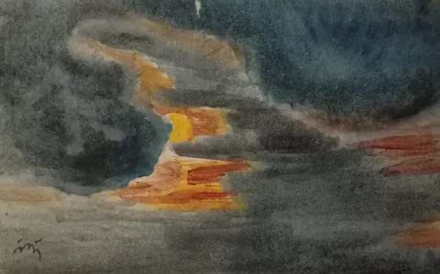
Evening Sky
Postcard 05
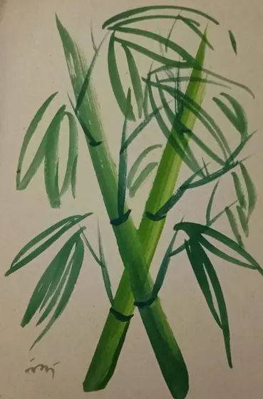
Bamboo
Postcard 06
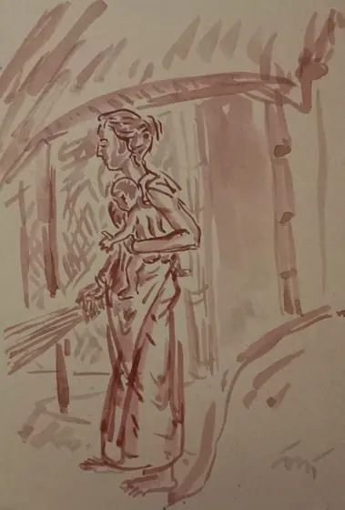
Mother and Child
Postcard 07
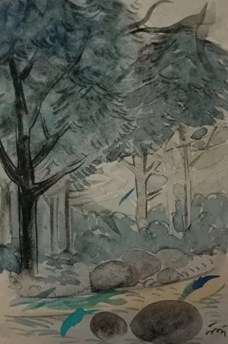
Forest Clearing
Postcard 08
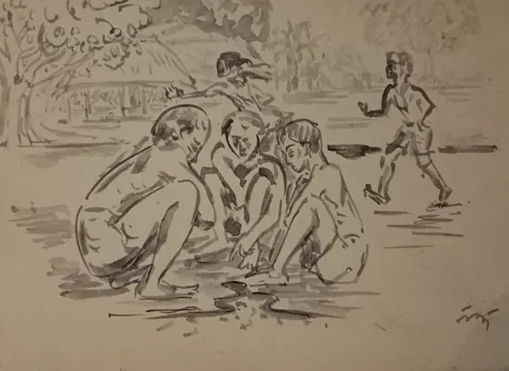
Children at Play
Postcard 09
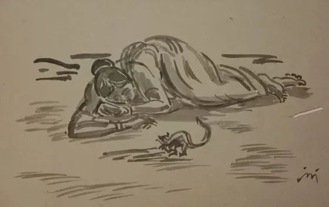
Afternoon Sleep
Postcard 10
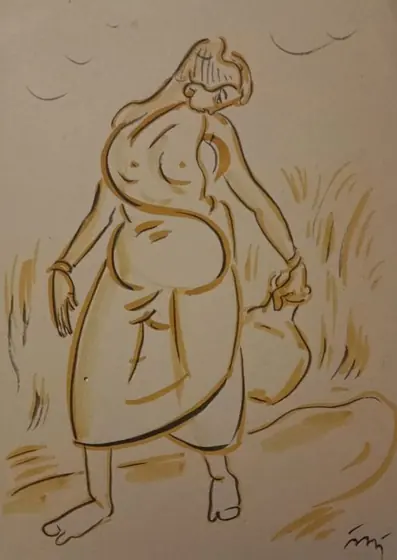
The Bather
Postcard 11
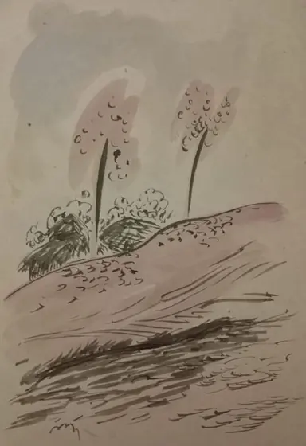
Two Trees on a Hill
Postcard 12
Cowherd
Postcard 13
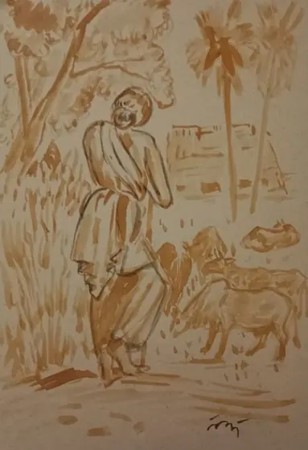
The Village Path
Postcard 14
Also in the house
The other artists in our care
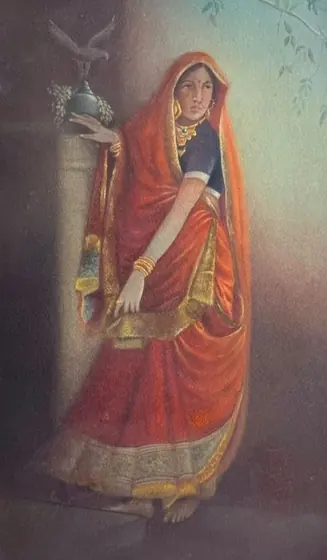
Abanindranath Tagore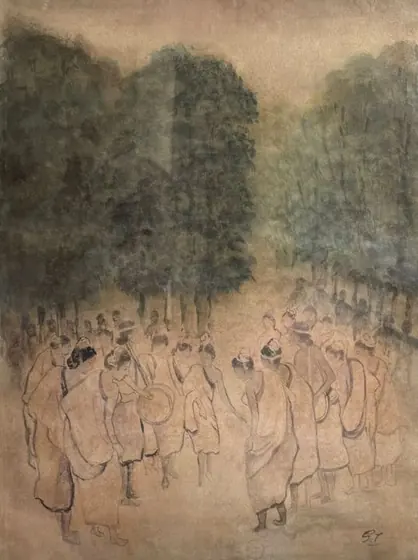
Gaganendranath Tagore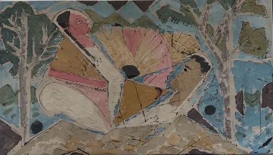
Ramkinkar Baij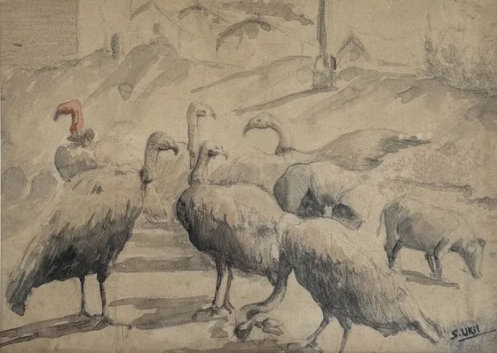
Sarada Charan Ukil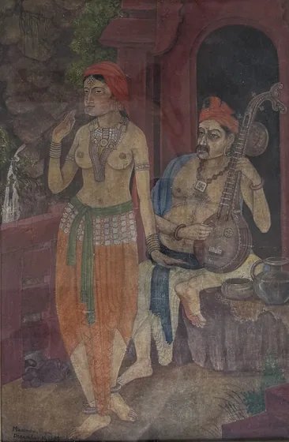
Maninder Gupta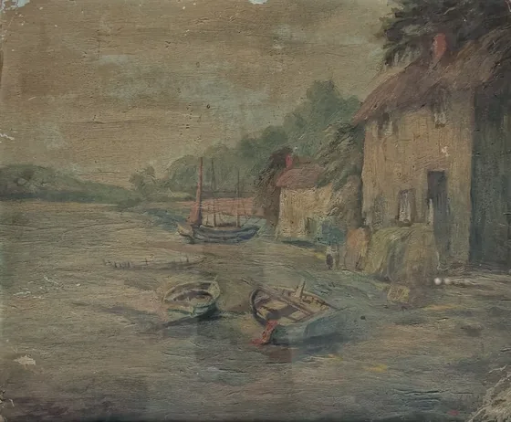
Indra Dugar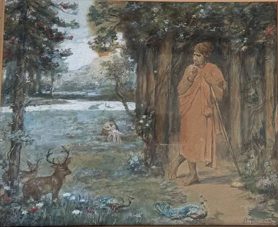
Hemen Mazumdar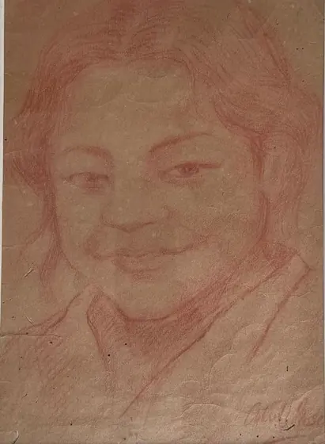
Atul Bose J. P. Gangooly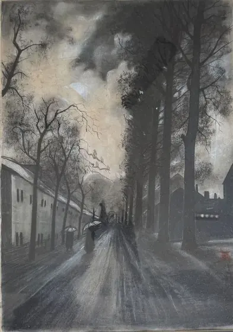
D. P. Roy Chowdhury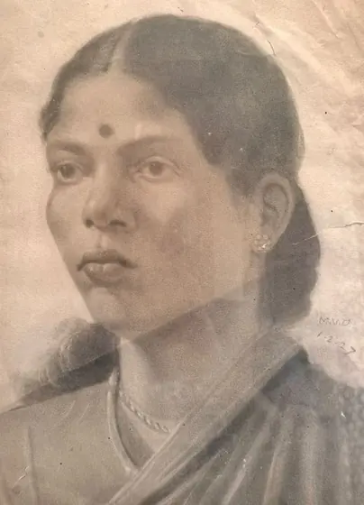
M. V. Dhurandhar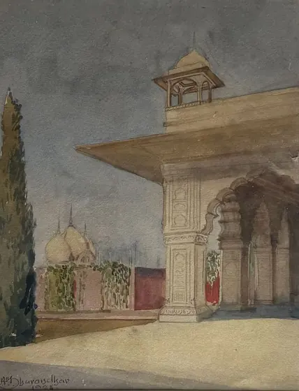
Ambika Dhurandhar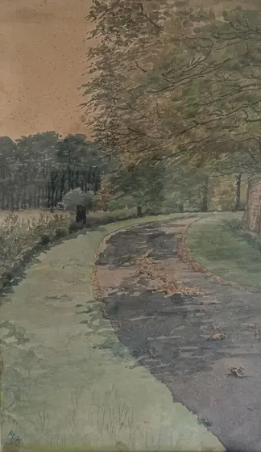
M. K. Parandekar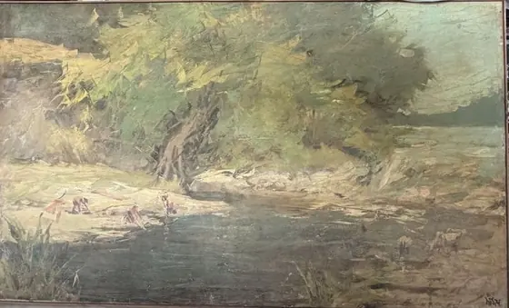
Madhav Satwalekar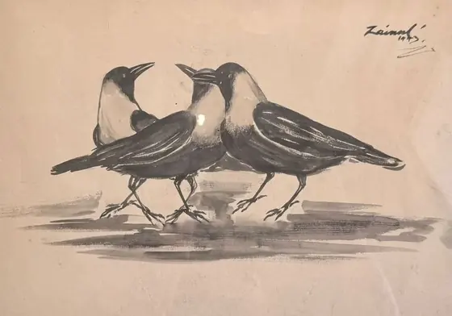
Zainul Abedin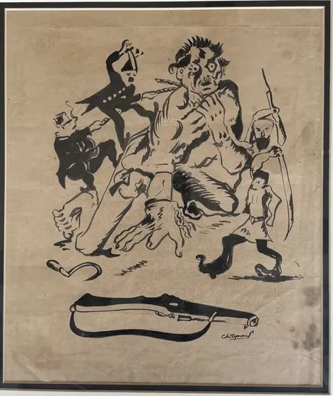
Chittaprosad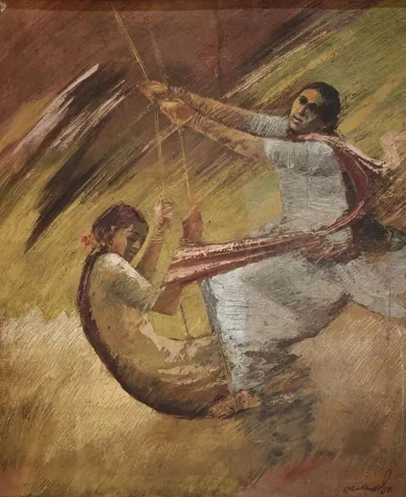
Gopal Ghose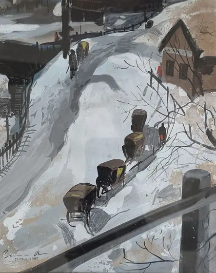
Biren De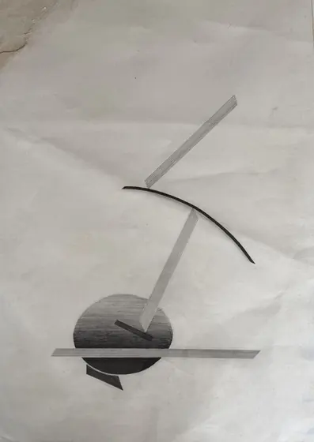
Nasreen Mohamedi A. A. Almelkar Amarnath Sehgal Thota VaikuntamThe circle
His teacher, his students
- Abanindranath Tagore1871–1951 · his teacher
- Rabindranath Tagore1861–1941 · brought him to Santiniketan
- Ramkinkar Baij1906–1980 · student, then colleague
- Benode Behari Mukherjee1904–1980 · student, then colleague
- Ramendranath Chakravorty1902–1955 · student, printmaker
- K. G. Subramanyan1924–2016 · student
Nandalal at the house
Stand in front of his work
Come and see Nandalal's work in person, or write to us if your family owns a piece of his and would like to know more about it.